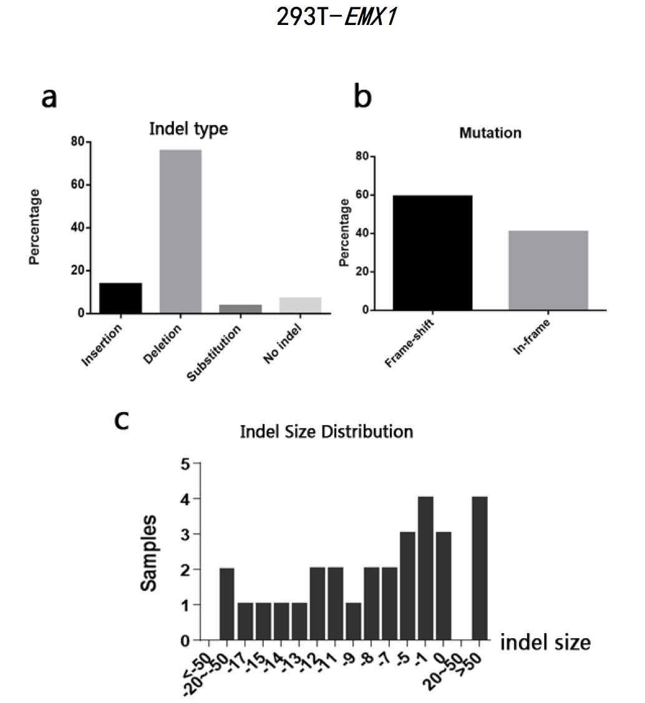
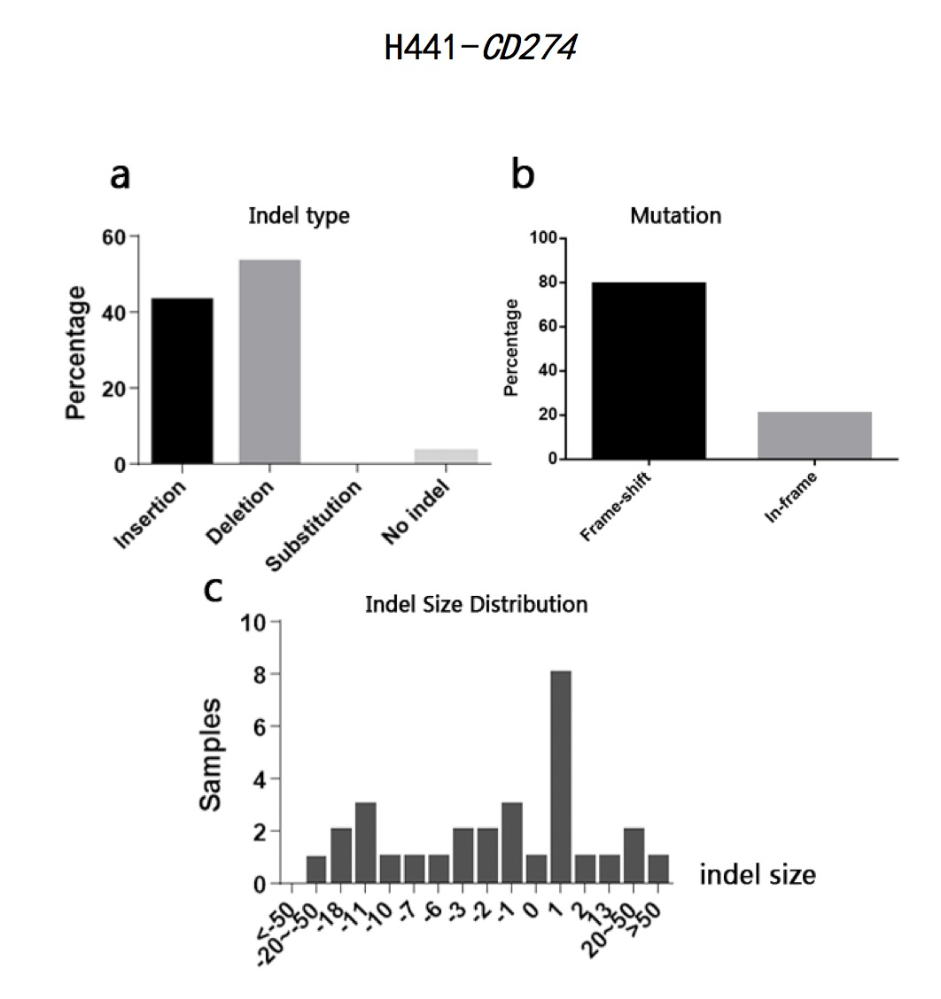
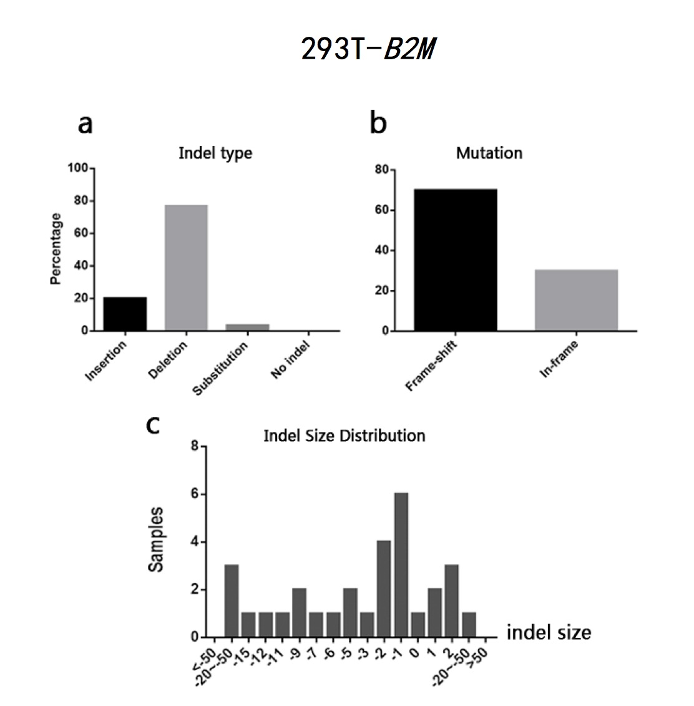
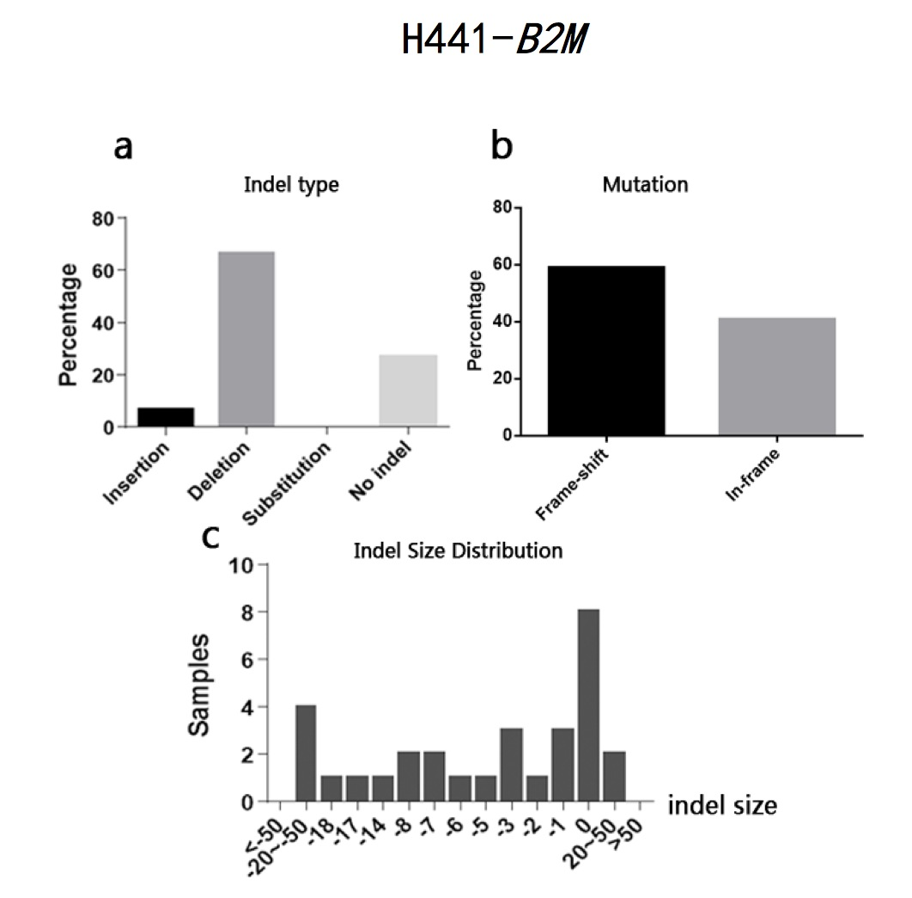

The typeII CRISPR/Cas9 system is an effective way of genome engineering to facilitate RNA-guided site-specific genomes edit by designing sgRNA to target DNA cleavage. The DNA double-strand breaks can stimulate homology- directed repair and induce minimal NHEJ (Non-Homologous End Joining)-mediated indel (insertion/deletion) mutation. However, it is still a conundrum to precisely predict the exact sequence changes in the targeted loci. In order to analyze sequence variations in genome editing using CRISPR/Cas9 system on a base-level, this study has developed a Perl program to analyze sequence data and calculate the percentages of insertion/deletion and the mutation types (frame-shift/in-frame) based on the differences output generated by Codon Code Aligner software after aligning sequence samples. The program can also calculate the amounts of samples according to different indel sizes. The sample sequences used in this study are the sequencing results of EMX1 gene and B2M gene from human 293T cells and CD274 gene and B2M gene from human H441 cells after being edited by CRISPR/Cas9 system. The results show that all the sequence has a high percentage of both indel and frame-shift mutation. Most of the indel pattern are deletion. The results indicate that CRISPR/Cas9 System is efficient in causing loss of function in encoded proteins. It also indicates that it is practical to analyze indel statistic using the Perl program cited in this study.

Fig 1. H441-CD274 sample sequences alignment using CodonCode Aligner software (indel region)

Fig 2. 293T-EMX1 sample sequences alignment using CodonCode Aligner (indel region)
Fig 3. 293T-EMX1 sample sequences alignment using CodonCode Aligner (indel region)
Fig 4. 293T-EMX1 sample sequences alignment using CodonCode Aligner (indel region)
Fig 5. 293T-EMX1 sample sequences alignment using CodonCode Aligner (indel region)
Fig 6. 293T-EMX1 sample sequences alignment using CodonCode Aligner (indel region)
CMU, USA, 2014 Fall
Designed a poster for my course project of Introduction to Network Science.


- Received Best software project in 2013 iGEM (International Genetic Engineering Machine) world competition
- Received Gold Award in 2013 iGEM (International Genetic Engineering Machine) world competition

A screen shot of the software track of 2013 iGEM official site. The illustration was made by me^_^ ! Click the picture to see the original website.
This website is designed and developed by Xinran Li.© Copyright reserved.